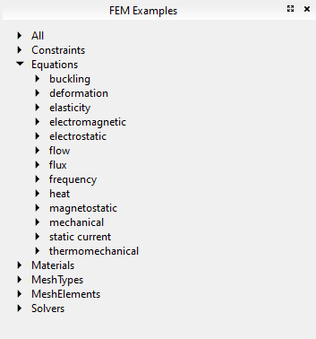

Release notes 0.19/de
FreeCAD 0.19 wurde veröffentlicht am 20.März 2021, hole es von der Download-Seite. Dies ist eine Zusammenfassung der interessantesten Änderungen. Die vollständige Liste der Änderungen kann im MantisBT bugtracker FC 0.19 Änderungsprotokoll eingesehen werden.
Ältere FreeCAD Versionshinweise findest du unter Funktionsübersicht.

Simpson und Shipton Kurzhub Dampfmaschine um 1845, mit horizontal rotierendem Kolben, von "un1corn", Anwender Schaukasten.
Höhepunkte

|
Horizontale 4 Zylinder Drehschieber Dampfmaschine, von "un1corn", Anwender Schaukasten. |

|
Vorentwurf von MAORY, einem Modul für adaptive Optik (AO) für das European Extremely Large Telescope (E-ELT); hier ist es auf der E-ELT Nasmyth Plattform montiert.
Diese Baugruppe wurde von "Zolko", dem Autor des neuen Assembly4 Arbeitsbereich, erstellt, das das neue leistungsstarke Objekt Anwendungsverknüpfung verwendet, um Tausende von verschiedenen Teilen und Unterbaugruppen zu importieren und sie mit Hilfe mathematischer Ausdrücke an bestimmten Positionen anzuordnen. Siehe Anwender Schaukasten. Für dieses Modell wurden die Teile nicht in FreeCAD konstruiert, sie wurden einfach im STEP Format importiert und anschließend mit Assembly4 arrangiert. |

|
Gleichlaufgelenk M. GECIK, von Nutzer "ppemawm", siehe Anwender Schaukasten.
Die STL Dateien wurden heruntergeladen, gespeichert und in FreeCAD importiert und sie wurden manuell mit dem Std UmwandelnManip Werkzeug zusammengebaut; dieser Polygonnetz Zusammenbau wurde als Referenz verwendet, um Volumenkörper Körper mit PartDesign zu erzeugen und anschließend mit dem neuen Assembly4 Arbeitsbereich zusammenzubauen. Das Modell wurde mit Zusammenbau4 begonnen, und jedes Teil wurde im Kontext erstellt, wobei für Skizze Bemaßungen auf das STL Modell verwiesen wurde; Skizzen wurden im Maßstab 1:1 mit dem STL Modell im Hintergrund erstellt. |

|
Der der den Neben vielen kleinen Verbesserungen gibt es folgende neue Funktionen: Maße entsprechen jetzt einer der Normen ISO 129-1 oder ASME Y14. 5M; neue Stücklistensymbol Anmerkungen zum Einfügen von Text innerhalb eines Kreises oder einer Polygonform; neue FormatierteText Anmerkungen zum Einfügen großer Absätze, die fett oder kursiv formatiert sind; kosmetische Knoten und kosmetische Kanten, die nicht Teil des Originalmodells sind, aber zum Erstellen eigener Maße verwendet werden können; grundlegende Unterstützung für Schweißsymbole; neuer aktive Ansicht Modus, um einen "Schnappschuss" der 3D-Ansicht zu machen; neue Grundvorlagen für ISO-Größen (A0 bis A4) sowie russische und chinesische Sprachvorlagen; neue horizontale und vertikale Bemaßungen, die die Gesamtausdehnung der Projektionen messen; SVG-Flächenschraffuren sind nun verfügbar, wenn die Seite nach SVG exportiert wird; das neue App-Link-Objekt wird nun auch als Quelle für die Erstellung von Ansichten unterstützt, was bei der Arbeit mit Baugruppen nützlich ist. |
Allgemeines
Mit mehr als 8128 Änderungen im Masterzweig seit der Version 0.18 ist dies eine der umfangreichsten Versionen aller Zeiten, mit mehreren neuen Komponenten wie dem neuen "App::Link" Objekt, sowie vielen neuen Werkzeugen im TechDraw Arbeitsbereich, welche FreeCAD noch leistungsfähiger für die 3D Volumenmodellierung und -zusammenbau machen. Daneben ist das FreeCAD Ökosystem mit spezialisierteren externen Arbeitsbereichen weiter gewachsen.
Python 3 und Qt5
Das Vorhaben, von Python 2 und Qt4 auf Python 3 und Qt5 zu migrieren, ist im Wesentlichen abgeschlossen, und die meisten Entwickler sind auf die Python3/Qt5 Werkzeugketten umgestiegen.
Zweifellos gibt es unvorhergesehene Fehler; diese werden behoben, sobald sie gemeldet werden. Jegliche bestehende Abhängigkeit von Python 2 oder Qt4 wird nach dem 1. Januar 2020, wenn Python 2 offiziell nicht mehr von der Python Foundation unterstützt wird, nicht mehr unterstützt werden. Bitte beachte, dass bestimmte Erweiterungen noch nicht nach Python3/Qt5 portiert worden sind. Dies kann verschiedene Gründe haben, wie z.B. Zeitmangel der Entwickler, fehlerhafte Abhängigkeiten, die nicht leicht behoben werden können, oder einfach, weil die Erweiterung als veraltet angesehen wird. Personen, die an der Migration eines bestimmten Arbeitsbereichs oder eines bestimmten Werkzeugs interessiert sind, werden ermutigt, am FreeCAD Forum teilzunehmen; siehe auch Python3- und Qt5 kompatible Erweiterungs Arbeitsbereiche (in Vorbereitung auf 0.18).
Bekannte Probleme
Behobenes Thema mit der Sichtbarkeit von Std Part Containern, wenn das Ansichtsfenster in Qt5 im Vollbildmodus angezeigt wird:
- Setze
Qt::AA_ShareOpenGLContextsfür Qt 5.9 und höher; Forumsdiskussion, commit 2a1dd8415 und commit 57b3ca6f77. - Deaktivierte ESC Schaltflächenunterstützung in
View3DInventor::keyEvent()für Qt5, um MDI Ansichtsmodus-bezogene Rendering Artefakte zu vermeiden; Forumsdiskussion, commit 960d612547. - Behobener Fehler in
MainWindow::setActiveWindow, um einen Absturz bei der Rückkehr vom Vollbildschirm zu vermeiden; Forumsdiskussion, commit c4e34ed9b. - Behoben issue #4088 über die Sichtbarkeit des Ursprungs eines Teils, die sich ändert, wenn die 3D Ansicht abgedockt wird; Forumsdiskussion, commit 1e19ef5be.
- Behoben issue #3130 über Qt5 Fehler bei der Verwendung eines externen Monitors mit hoher Auflösung; Forumsdiskussion, commit 2f2d505359.
Entwicklung
Für das Kompilieren von FreeCAD unter Windows sind verschiedene Libpacks (vorgepackte Bibliotheken) verfügbar:
- Libpack für Windows mit Qt 5.12, OCC 7.3, und Python 3.6; Forumsdiskussion.
- Libpack für Windows mit Qt 5.12.6, OCC 7.4; Forumsdiskussion, pull request #2944.
- Libpack für Windows with Qt 5.15, OCC 7.5, und Python 3.8; Libpack 12.5.1 Forumsdiskussion
Weitere Development News:
- Es gibt einen neuen Docker Container um FreeCAD zu bauen, siehe Kompilieren auf Docker; Forumsdiskussion.
- Die Infrastruktur des Fehlernachverfolgers wie auch des Wiki wurden auf einen dedizierten Server verschoben, so dass sie für die Projekt Administratoren einfacher zu verwalten sind; Forumsdiskussion.
Dokumentation
- Die Kompilieren unter Linux Seite wurde überarbeitet, um die Voraussetzungen für die Kompilierung auf verschiedenen Linux-Distributionen besser zu erklären. Da viele Entwickler Debian basierte Systeme verwenden, erhielt dieser Abschnitt die meiste Aufmerksamkeit. Benutzer anderer Linux Distributionen werden ermutigt, die Dokumentation für ihre spezielle Distribution zu pflegen.
- Kompilieren unter Windows wurde ebenfalls umgeschrieben, um zu erklären, wie man das "LibPack" zum Kompilieren verwendet.
- Kompilieren unter Docker wurde erstellt, um die Kompilierung in diesem System zu beschreiben.
- Die Quell Dokumentation Seite erhielt auch eine Bereinigung, um besser zu erklären, wie man die Programmier (API) Dokumentation aus C++- und Python Quellen erzeugt.
- Die Seite Doxygen wurde überarbeitet und erweitert, um mehr Details über die Syntax zu geben, die in C++ Dateien verwendet wird, um die Programmierdokumentation zu erstellen.
- Die Quellcode Verwaltung Seite wurde ebenfalls überarbeitet und mit besseren Beschreibungen und Beispielen für die Verwendung von
gitzur Verwaltung von Zweigen und zum Einbringen von Code versehen. - Die Externe Arbeitsbereiche Seite wurde neu organisiert, so dass alle funktionsreichen, öffentlich zugänglichen Arbeitsbereiche aufgelistet sind. Wenn du einen Arbeitsbereich zu dieser Seite hinzufügen möchtest, stelle sie im Forum vor und stelle unterstützende Informationen wie Benutzerhandbuch, Wiki Seiten und eine Verknüpfung zu ihrem Repositorium zur Verfügung. Dann dränge darauf , damit sie in den Addon-Manager aufgenommen wird.
- Es gab Verbesserungen an den Seiten Tutorien und Videotutorien. Insbesondere wurde den Lesern gegenüber betont, dass sie nur Videotutorien berücksichtigen sollten, die mit den Versionen 0.17 und höher erstellt wurden.
Bekannte Begrenzungen
- Schwarzer Bildschirm aufgrund von Grafikkartentreibern, während FreeCAD in einer virtuellen Maschine ausgeführt wird; Ausgabe #3939.
- Der Logitech Wingman USB Joystick kann beim Drehen und Zoomen in der Ansicht ein unregelmäßiges Verhalten verursachen; Forumsdiskussion.
- Die Gestennavigation wird unter Windows vollständig unterstützt, muss aber unter Linux und MacOS noch gewartet werden. Problem: Der Entwickler, DeepSOIC, hat keinen MacOS Rechner mit seinem speziellen Trackpad und hat es auch nicht unter Linux getestet; Forumsdiskussion.
Benutzeroberfläche

|
Der Navigationswürfel erhielt einige Retuschen; jetzt verwendet er Transparenz, um die Augen zu schonen, und die Pfeile sind größer, um das Anklicken zu verbessern. |

|
Der Navigationswürfel kann durch das WürfelMenü Erweiterung erweitert werden, mit dem das aufklappende Menü sowie die Größe des Würfels selbst konfiguriert werden kann. Dies ist vor allem bei sehr hochauflösenden Bildschirmen hilfreich, bei denen die Standardgröße zu klein ist. Dies ist ein externes Werkzeug, das über den Erweiterungsverwalter installiert werden kann.
Forumsdiskussion; WürfelMenü Repositorium (LGPL 2.1). |

|
Es gibt eine neue Voreinstellungen Option, um Auswahlkästchen vor jedem Dokumentenbaum Element anzuzeigen. Dies ist z.B. nützlich, um mehrere Elemente über einen Touchscreen auszuwählen. |
| New COIL icon theme developed by user 1D_Inc. This is a minimalistic icon set inspired on Blender's 2.8 outline-style icons (a coil of threads or strands alludes to the appearance of the icons). The intention is to have professional-looking icons that can be used with different color themes, including light, dark, and monochrome.
Forum discussion 1 (old thread), discussion 2 (main thread), 1D_SVG_Tools repository. | |

|
New icon theme management developed by user triplus. |

|
New dark stylesheet developed by user userzmp2000. |

|
Dark themes by user pablogil. Blue, green, and orange variations, which are darker than previous templates. |

|
The Std ViewScreenShot tool now supports transparency. Options are available by clicking the Extended button and changing the Image Properties section. |
Anwendung::Verknüpfung und Zusammenbau


Das "App::Link" Objekt ermöglicht das leichte Verknüpfen von Objekten in einem Dokument und aus externen Dokumenten.
Nach 2,5 Jahren Entwicklungszeit wurde das "Verknüpfung" Objekt, oder formaler Anwendungs Verknüpfung (App::Link Klasse), in FreeCAD eingeführt. Dies ist ein spezieller Typ von Anwendungs DokumentObjekt mit bestimmten Eigenschaften, die es hoffentlich ermöglichen, Baugruppen einfacher zu erstellen.
An "App Link" allows objects to use another object's data, such as geometry or even their 3D visual representation, in the same or different files. It can be thought of as a thin, absolute clone, or as the same object living into two different "instances". Some functionality offered by an "App Link" is already present in some workbenches like Arch and BIM (clones, external references), but the "App Link" implementation is at the core level, and thus can be used by all workbenches in different ways.
The "App Link" component was thought and developed almost single-handedly by user realthunder. The motivations and design implementations behind this project are described in his GitHub page, Link. In order to accomplish this feature, several core changes to FreeCAD were made; these are also extensively documented in Core-Changes.
The history of "App Link" can be traced to some essential forum threads:
- Why an object can only be inside one App::Part? (March 2017)
- Introducing App::Link/XLink (March 2017)
- Links (May 2017)
- Realthunder Link implementation: Architecture discussion (June 2017)
- PR #876: Link, stage one, context aware selection (July 2017)
- Preview: Link, stage two, API groundwork (July 2017)
- Assembly3 preview (December 2017)
- Merging of my Link branch (June 2018)
Finally, the pull request and merge happened:
- App::Link: the big merge, old thread (July 2019), pull request #2350 (the BIG merge), LinkMerge branch.
- App::Link: the big merge, main thread (July 2019)
- A simple path description of Link, 019, Link stage, Asm3, merge? (August 2019)
- PR#2559: expose link and navigation actions, an introduction to the Link feature in 0.19 (September 2019).
The "App Link" object prepares FreeCAD for the phase that was scheduled to happen after the redesign of PartDesign in FreeCAD 0.17, which is working with assemblies.
Assembly3 is an assembly workbench written in Python by realthunder, that makes use of the "App Link" functionality. The workbench served as a testbed for this component during its development. While Assembly3 is still not officially part of FreeCAD, with the inclusion of "App Link" in the master branch, it is a matter of time for Assembly3 to be provided as an installable add-on, just like A2plus and Assembly4 are provided currently.
Kernsystem, Anwendungs-, Basis- und Gui Namensräume
Neben der Einführung von Anwendungsverknüpfung wurden mit dem "Verknüpfung Zusammenführen" Zweig auch einige für den Benutzer sichtbare Änderungen in Bezug auf Objekteigenschaften, Ausdrücke, visuelle Auswahl und die Baumansicht eingeführt. Diese sind auf der Seite Wesentliche-Änderungen beschrieben.

|
Dynamische Eigenschaften können zu jedem C++ oder Python Objekt hinzugefügt werden. Dadurch können Makros wie Makro EigenschaftsMemo überflüssig werden.
Forumsdiskussion, animiertes GIF Beispiel. |

|
Diese dynamischen Eigenschaften wurden bei der Anwendungsverknüpfung Zusammenführung hinzugefügt; pull request #2350. |

|
Ausgewählte Elemente, die durch andere Elemente verdeckt sind, werden hervorgehoben, um ihre Position innerhalb des Modells anzuzeigen.
Diese Auswahlverbesserungen wurden auch bei der Zusammenführung Anwendungsverknüpfung eingeführt.; pull request #2350. |

|
Nach zwei Jahren Stillstand gibt es Verbesserungen beim Umgang mit Sicherheitskopiedateien. Sie können nun einen Zeitstempel im Format %Y%m%d-%H%M%S enthalten, anstatt einer einfachen Nummer. Dies kann im Voreinstellungseditor eingestellt werden (Bearbeiten -> Einstellungen -> Allgemein -> Dokument -> Datums- und FCBak Erweiterung verwenden).
|

|
Neues Eingabefeld, um schnell nach Parametern im Parametereditor zu suchen. |

|
Das Makro-Menü zeigt nun ein Tastaturkürzel auf kürzlich verwendete Makros, die mit einer Tastenkombination aufgerufen werden können, z.B. Strg+Shift+1. Dies kann in den Makro-Voreinstellungen konfiguriert werden. |
{kind=link}
- Added support for existing Python virtual environments; pull request #2021.
- Pre-select name filter in the import/export dialog; forum discussion, commit e239994,
- Fixed missing application ID and icon on GNOME/Wayland; pull request #2466.
- Added support for Hertz as a physical unit, and added the Frequency property; forum discussion, commit 3500451a0, commit d7ca604c9.
- Added Std TextDocument tool to insert an object to store arbitrary text in the document; commit 13db5b0560, commit 53b01f08f9.
- Added support for further units, Gauss, Weber, Oersted; forum discussion, pull request #2863.
- New commands to get information on the graphical commands, and the shortcuts;
Gui.getCommandInfo(...),Gui.getCommandShortcut(...),Gui.setCommandShortcut(...); forum thread, pull request #3710. - New glTF support (requires OCC 7.5.0) commit
- New WebGL exporter pull request #4025
Erweiterungsverwalter

|
Der Addon-Manager wurde aktualisiert; er ist nun in der Lage, vollständigere Informationen zu allen externen Arbeitsbereichen und Makros anzuzeigen und für jedes von ihnen ein Symbol anzuzeigen. Es ermöglicht auch, beim Start nach Aktualisierungen zu suchen und benutzerdefinierte Repositorien zu verwenden. |

|
Es zeigt auch Informationen darüber an, ob die Erweiterung veraltet, bereits installiert oder zur Aktualisierung verfügbar ist. |
Arbeitsbereich Architektur
Halte Schritt mit den neuesten Entwicklungen des Arch Arbeitsbereich und dem davon abhängigen BIM Arbeitsbereich, indem Sie dem Hauptautor dieses Arbeitsbereichs folgen, unter Nicht erstellt. Die Aktualisierungen werden auch im Forum veröffentlicht, BIM/Arch Entwicklung Nachrichtenartikel aus Yoriks Blog.
Die Entwickler von Entwurf, Architektur und BIM Arbeitsbereiche arbeiten auch mit der größeren OSArch-Gemeinschaft zusammen, mit dem Ziel, den Entwurf von Gebäuden durch den Einsatz völlig freier Software zu verbessern.

|
The Arch Site tool once more is able to produce sun path diagrams if the given latitude, longitude, and declination are provided. This requires Pysolar 0.7 or above, and only works with Python 3. |

|
The Arch Site tool now can display a compass to show the direction of the "true North" (declination) in the model. By the default, North is aligned to the Y axis. This is useful when working in real world coordinates.
Forum discussion, pull request #2111, commit ff1fb11af, pull request #2360. |

|
The Arch SectionPlane tool now has the ability of clipping the view, to act as a camera. |

|
The Arch Fence tool was added to produce fence objects starting from a post and a path.
Forum discussion, pull request #2151, pull request #2173, pull request #2263, pull request #2270. |

|
Verbesserungen im Arbeitsbereich Reinforcement, die das Werkzeug Arch Bewehrung erweitern.
Automated reinforcement graphical user interface: the intention is to facilitate the automatic creation of simple and complex rebars. This development was carried out as a Google Summer of Code 2019 project: Suraj_Dadral/gsoc_proposal. Forumsdiskussion, FreeCAD-Bewehrung (Mastercode), SurajDadral/FreeCAD-Reinforcement (Entwicklungszweig). |

|
New rendering modes for Arch SectionPlane that can be selected when using TechDraw ArchView, DatenRender Mode, Coin and Coin mono. The section plane generates an SVG that is simply displayed in a TechDraw page; with these new modes, the SVG generation is performed by Coin, so it is faster than using Wireframe and Solid, which use the internal OCCT kernel to calculate the SVG projection. The tradeoff is between speed and precision; the Coin modes are faster but less precise, while the original modes are more precise but relatively slow.
|

|
New Arch CutLine tool to cut solid objects, like Arch Walls and Arch Structure, using an edge, like a Draft Line. This works similar to the existing Arch CutPlane. |

|
Architektur enthält nun einen Formdatei Importeur, der häufig in GIS Anwendungen verwendet wird. Der Importeur verwendet die Bibliothek shapefile.py aus dem Projekt pyshp; diese Bibliothek sollte beim ersten Start heruntergeladen werden.
Forumsbeitrag, commit 916a42397c. Bild eines Geländes, geteilt von @HnsaCAD für @gemeentearnhem. |

|
New Arch Truss tool to create a variety of trusses. Like Arch Walls they are constructed from a baseline, and different properties define the shape of the truss, its height, and the intermediate elements.
Er unterstützt auch Architektur MultiMaterial, um den unteren, oberen und mittleren Elementen unterschiedliche Materialien zuzuweisen. |

|
Neues Arch Vorhangfassade-Werkzeug (nicht "Vorhandene Fassade"), um verschiedene Arten von Wänden zu erzeugen. Dieses Werkzeug benötigt eine Basisoberfläche, um damit zu arbeiten. Falls keine ausgewählt wurde, kannst du einfach eine Linie zwischen zwei Punkten zeichnen, wie bei der Standard Arch Wand. Die Oberfläche wird dann in Reihen und Spalten unterteilt, und vier Punkte aus den Oberfächen-Unterabteilungen extrahiert, die viereckige Facetten bilden. |
Arbeitsbereich Entwurf

|
Das Entwurf Bearbeiten Werkzeug wurde verbessert, um die gleichzeitige Bearbeitung vieler Entwurfsobjekte zu ermöglichen und bessere Nachverfolger anzuzeigen.
Forumsdiskussion, pull request #1968, commit 272a8dfcc9, commit 7de2248bb, pull request #2108, pull request #2430; animierte GIF Beipiel. The tool was also moved into its own module: commit a4e2df115d, commit c351b9094. |

|
New Draft SubelementHighlight tool to highlight the nodes and edges of certain objects, like Draft Wires, in order to edit them using modifiers like Draft Move, Draft Rotate, and Draft Scale. It allows you to select multiple objects to edit instead of just one. Once the objects are highlighted, you can select specific sub-elements, vertices and edges, and transform (move, rotate, scale) only these.
This tool was particularly developed to help edit the shape of Arch Walls that are based on Draft Wires. When various walls are selected, and the tool is used, the base wires automatically become visible, and display their nodes prominently. Forumsdiskussion, pull request #1975; Video Vorführung 1, 2. |

|
New Draft CubicBezCurve tool, to create 3rd degree Bezier curves in a way similar to Inkscape.
Forum discussion, pull request #2072; animated GIF example. |

|
New Draft Arc 3Points tool, to create circular arcs by specifying three points through which the arc passes. Originally developed in the BIM Workbench and then migrated to Draft.
Forum discussion, commit 4f19a65559, commit 0b905fade0, pull request #2286. Eine eigene Kommandozeilenoberfläche sowie Einheitentests werden ebenfalls bereitgestellt. |

|
New Draft Layer tool that replaces the seldom used Draft VisGroup, providing a true layer system as it exists in other CAD systems. Draft Layer supports adding objects by drag-and-drop, controls object visibility and, optionally, object color.
Forum discussion (development), forum discussion (announcement), commit 5ee99ca4ee, commit 36bc48c9bf. |

|
Improvements in the Draft SVG routines to improve inclusion of 2D projections in TechDraw pages. This benefits tools like Draft Shape2DView and Arch SectionPlane, when used with TechDraw DraftView and TechDraw ArchView.
A new DatenOverride Style property is added to TechDraw DraftView, in order to choose whether the appearance of Draft objects is kept (new) or is overridden by the TechDraw page (old behavior). |

|
New Draft Fillet tool that creates a fillet (rounded corner) or a chamfer (straight line) between two simple Draft Lines. |

|
The introduction of the App Link object made it possible to create arrays which have many exact references to an existing object instead of shape duplicates (simple copies). This results in more memory efficient arrays. This is possible with the new Draft LinkArray and Draft PathLinkArray tools. Draft LinkArray works in three modes, "ortho", "polar", and the new "circular" mode, which was introduced in a separate commit.
After the creation of the Link arrays, a new command called Draft OrthoArray now replaces both Draft Array and Draft LinkArray. This Draft OrthoArray is used to create exclusively orthogonal arrays. It shows a task panel similar to Draft PolarArray and Draft CircularArray. Therefore, from the toolbar it is now possible to create "orthogonal", "polar" and "circular" arrays from separate buttons. Moreover, the array buttons are collected in a group so that they are organized. |

|
New Draft PolarArray tool to create polar arrays directly. Previously, the same could be done by using the old Draft Array command, and then modifying the properties of the created object.
This Draft PolarArray tool can create the new App Link objects or the traditional copies. |

|
The Array object has a new "circular" mode. This is controlled by new properties: DatenRadialDistance, DatenTangentialDistance, DatenNumberCircles, and DatenSymmetry.
Forum discussion, pull request #2585. Moreover, a new Draft CircularArray tool was developed to create these circular arrays directly. This tool can create the new App Link objects or the traditional copies. |

|
The unit tests of the workbench were rewritten and expanded, so that now it is easier to test for errors and regressions when new code is merged.
Forum discussion, pull request #2668, #2727, #2881, #3005. Also, a script is provided in |
| New icons were provided for the Draft objects in the tree view. The objective is to more quickly distinguish the objects at a glance, particularly if the default label is changed. This makes it easier to recognize objects which are lines, curves, geometrical elements, linear, radial, or angular dimensions, or other objects.
In addition, all icons were converted to the new standard pixel resolution of 96 dpi, and were saved as Plain SVG, so that we don't introduce non-standard SVG tags. Forum discussion, pull request #3051, #3058, #3060, #3070, #3170, #3402. | |

|
Undergoing efforts to split tools into their own module files to ease maintenance of the codebase for the future, and facilitate the addition of new tools.
Forumsdiskussion, Gesamtstruktur. Some of the functions and classes that have already been moved: commit 5ee99ca4ee (Draft Layer), commit 16c26cb3b1 (Draft Edit), commit 9fb6aec313 (Draft SelectPlane), pull requests #2823 (GuiCommandBase), #2829 (utilities), #2830 (GUI utilities), #2831 (ToDo class), #2832 (translate function), #3091 (Draft Snap), #3092 (Draft Trackers), #3094 (Draft SelectPlane), #3095 (Draft ShapeString task panel), #3096 (Draft Scale task panel), #3097 (Draft Edit), #3157 (Draft WorkingPlaneProxy), #3182 (various Gui Commands), #3291 (base classes For an overall view of the pull requests, see #2429. This is a work in progress that requires advancing carefully as we aim to maintain compatibility with previous versions of Draft. Most refactoring is complete, but there is still room for improving many aspects of the workbench. We invite enthusiastic developers to join the effort. |

|
New Annotation style editor tool to create styles for annotations. These styles can define things like text font, size, color, and arrows, which can be applied to any of your texts, dimensions or labels. We started by implementing an editor and a system to store the styles in the document. Next steps will be adapting the different annotation objects to support the styles.
Forum discussion, commit 1b887fa0f5, commit 4555a77663, commit 5b3fea59e0. |
{kind=link}
{kind=link}
Weitere Entwurf Verbesserungen
- Das Drahtentwurfswerkzeug heißt jetzt im Menü "Polylinie" statt "DWire"; alle Optionen und Funktionen bleiben gleich, so dass dies die Kompatibilität nicht beeinträchtigt; commit 39e748229e.
- Eine "DraftEditPickRadius" Einstellung wurde hinzugefügt, um den Einflussbereich des Zeigers beim Auswählen von Eckpunkten im Bearbeitungsmodus Entwurf Bearbeiten zu steuern; Forumsdiskussion, pull request #2642, issue #4162.
- Es werden Anstrengungen unternommen, den Python Quellcode zu dokumentieren (Hinzufügen von vollständigen Docstrings), um eine bessere Programmierdokumentation zu erstellen, die sowohl von Benutzern als auch von Entwicklern genutzt werden kann. Siehe Quelltextdokumentation für eine Anleitung zur Erstellung der Dokumentation mit Doxygen.
- Der "Werkzeugleistenmodus" beim Starten der Entwurfswerkzeuge wurde entfernt. Dies war eine Schnittstelle, die in der Vergangenheit verwendet wurde, aber obsolet wurde, als das Aufgabenpaneel die vorherrschende Oberfläche wurde; Forumsdiskussion, pull request #2973.
Draft.copyfunktioniert jetzt mit jedem Dokumentobjekt, dank der neuen MethodeDocument.copyObject(), die mit dem LinkMerge eingeführt wurde; pull request #3658.
Arbeitsbereich FEM

|
After half a year in development and testing the "femconcrete" branch was added to the FEM Workbench. This provides tools to estimate the level of reinforcement required in a concrete structure to prevent brittle failure under tension or shear. In essence, it is a post processing routine for the CalculiX solver, which calculates the principal tensile stresses in the concrete from an elastic analysis and uses those to determine the minimum reinforcement in the three coordinate directions required to prevent failure.
Forum discussion, pull request #2267; Analysis of reinforced concrete with FEM (tutorial). |

|
After a few months in development the "fcFEM" macro was published. It implements a finite element solver entirely in Python. Its author designed it to overcome the limitations of other external solvers, like CalculiX and z88. Some of the intended improvements include creating mixed mesh analyses, improved beam and shell elements, arc-length control for overcoming limit points in elastic-plastic analyses, implementation of zero-thickness interface elements for different applications, and others.
In due time this solver could be distributed together with the FEM Workbench, meaning that the FreeCAD project would have its own finite element solver for doing mechanical and structural analyses. Forum discussion; fcFEM repository (LGPL 2). |

|
Topology optimization has long been a feature desired for those working with FEM. In 2016 the BESO (Bi-directional Evolutionary Structural Optimization) project was started, implementing an iterative method with the CalculiX solver that removes ineffective elements from a mesh in order to optimize the mass of the design. In the 0.19 development cycle, a simple graphical interface has been developed to facilitate generating the beso configuration files.
Forum discussion; beso repository (LGPL 3). |

|
Similar to beso, the ToOptix project also provides a macro to perform topology optimization; it currently only works in structural and heat transfer studies.
Forum discussion (just a mention); ToOptixFreeCADAddon repository (GPL 2). |
|  | The FEM workbench has now a browsable set of example simulations: They are available via the menu Utilities → |

|
There are two new constraints available: menu Model → Geometrical Constraints → menu Model → Mechanical Constraints → one new solver: menu Solve → and a possibility to overwrite a constant: menu Model → Overwrite Constraints → |
{kind=link}
Weitere FEM Verbesserungen
- The Elmer project has developed a library for handling batch type pre-processing for the ElmerSolver, using the FEM Workbench. This includes creating mesh objects for FreeCAD, manipulating the mesh sizes of solids, creating finite element meshes using Gmsh, running ElmerGrid and exporting the mesh for ElmerSolver, and selecting and naming bodies and boundaries for ElmerSolver; forum discussion, elmerfem repository (Elmer main repository), FreeCADBatchFEMTools repository (library to interact with FEM Workbench, LGPL 2.1).
- The integration of the OOFem solver, which started in 2018, is progressing, so it is now another option that can be used for structural analysis in FreeCAD. This solver is interesting in that it has interface elements, as well as arc-length control, in addition to many non-linear material models. The integration of OOFEM into FEM has been carried in various commits that together serve as documentation on how to integrate similar solvers; forum discussion, femoofem branch, OOFEM main website, oofem repository (LGPL 2.1).
- Updated coding standards that strive for PEP8 compliance with Python; forum discussion, commit ad03ee9bdf, commit 27cb54009b.
Import
- Verbesserte Import-/Export-Kompatibilität mit proprietären CAD-Systemen bei der Verwendung von komprimiertem STEP oder STPZ; forum discussion, pull request #2323, commit 7de89cf62e.
Materialhandhabung
Keine
Polygonnetze

|
Mesh FromPartShape is now able to create meshes using Gmsh. This mesher is an external program that must be installed in the system before it can be used. Gmsh was already one of the options to create finite element meshes with the FEM Workbench.
Moreover, now the Mesh FromPartShape dialog will remember the settings that you used the last time. |

|
The mesh workbench has now several toolbars to quickly access the different features. |
Weitere Verbesserungen
- It is now possible to take an OpenInventor mesh file (.iv), and export it to STL; forum discussion, commit 601ac707b2.
- It is now possible to export a Mesh to Asymptote format (.asy ); forum thread, commits 4badaba5, 50bbd522, 58a92681, dd7afa72, b0f78f5a.
- Most tools of the Mesh Workbench now have a proper icon so it is easier to recognize the function in the menu and toolbars; forum thread, pull request #3816, #3864.
Arbeitsbereich Part

|
New command Part PointsFromMesh to create an object made of points from an imported mesh. Then the points can be used as reference objects to do further operations, such as define a plane, and draw a sketch. This can be used to reverse engineer or remodel meshes by creating solid objects.
Forum discussion (and video), pull request #2450. |

|
Existing primitives can now be edited in a dialog that also shows the changes as live preview. To do this, click on the primitive in the model tree and the dialog opens.
commit 6d831627, commit f23187cd, commit dabf65cc and commit 7251a90f |

|
When inserting primitives the location can be set using translation and rotation. |

|
The |

|
A script is provided in Mod/Part/parttests/part_test_objects.py, that produces a test file with the Part Primitives. This file is useful to learn scripting in Part, and can also be used to test regressions in the underlying code of the objects.
|
Weitere Verbesserungen
- Der Dialog zum Bearbeiten von Prismen erlaubt nun die Angabe eines Winkels in Bezug auf die Normale der gewählten Befestigungsebene. Auf diese Weise kann man schiefe Prismen erzeugen. Forumsdiskussion, pull request #3793
- Neue Methode Fläche:
Part.Face.cutHoles(list_of_wires)um Löcher in eine Fläche zu schneiden. Die Fläche muss normalerweise nach der Operation validiert werden. - Mit der Zusammenführung von Anwendungsverknüpfung wurden zwei neue Befehle eingeführt, Part TransformierteKopie und Part ElementKopie. Diese Befehle erzeugen nicht-parametrische Kopien eines Körpers mit einer transformierten Platzierung und eines Elements (Knoten, Kante oder Fläche); commit 6da72b9859. Diese Operationen machen den Makro Repro Draht im Wesentlichen überflüssig.
- Es ist nun möglich, Ausdrücke für alle Parameter von Grundelemente zu setzen. commit dd4874d2 und commit 7405dd0e.
- Fehlerhafte Unterstützung für "INCH" (Zoll) Einheiten beim Exportieren in STEP/IGES Formate behoben; Forumsdiskussion, commit 1b26173580.
Arbeitsbereich PartDesign

|
Features that have an "Attachment" property now show when the attachment mode is "deactivated" by displaying a small overlay to the left of the icon in the tree view. Features that are attached to a plane or other reference don't display this overlay. |

|
The dialog to edit chamfers allows now to define chamfers also either
These 2 parameters can also be flipped using the dialog. Forum discussion, pull request #3456 |

|
The dialog to edit pads allows now to specify a direction in which the sketch is padded. |

|
PartDesign LinearPattern and PolarPattern now can be used with dress-up features (fillets, chamfers, thickness and draft) and with primitives (Additives and Subtractives). A new property DatenSupport Transform in these features, controls whether the feature supports the pattern or not. |

|
The dialog to edit Prisms (additive and subtractive) allows now to specify an angle in respect to the normal of the chosen attachment plane. This way one can create skew prisms. |

|
It is now possible to create additive and subtractive helices. |

|
It is now possible to select several features in the document tree before executing a transformation. This way several features can easily be transformed at once. The order of the features in the transformation dialog can be changed by dragging a feature to the desired position. |

|
The dialogs to edit fillets, chamfers, thickness, and draft features were improved to allow selecting several sub-elements (edges and faces) at once.
Forum discussion, pull request #3050, animated GIF example. |

|
The hole dialog offers now to select a norm to create cuts for counterbores and countersinks |

|
The new feature Sprocket allows to create chain sprockets. |
{kind=link}
Weitere Verbesserungen
- The hole dialog has been overhauled to create norm-conform clearance and threaded hole dimensions.
- It is now possible to set expressions for all parameters of additive and subtractive primitives. Forum discussion, pull request #3225.
- It is now possible to set expressions for the attachment angles of additive and subtractive primitives. Formerly, expressions were only available for the direction offsets. Forum discussion, commit 1cfe6d2cc7.
- It is now possible to change the list items in the different dialogs. For example in this forum post there is a good example why the item list matters for transformations. Here is another example for the sketch order for lofts. Forum discussion, pull request #3760, commit 94ca4388e.
Arbeitsbereich Pfad

|
Added coolant modes for coolant management. |
- New Tool Management system (Toolbits) Wiki Page, forum discussion
- Added Path DressupPathBoundary for excluding parts of a path
- PathPocket: Extensions (For milling open pockets).
- New unified Profile operation: The pre-existing Contour, Profile Faces, and Profile Edges of version 0.18.x are now combined into a single Profile operation. The new Profile operation maintains features and capabilities of the three individual source operations. forum discussion, pull request #3443.
- Profile Edges: Open Edges support added. Note: The Profile Edges operation is now merged into the Profile operation. forum discussion, pull request #3068.
- First attempt of 4th-axis support: Profile (limited to full contour and profiling of faces), PathPocket, and Drilling
- Fixed issue #3993, Python 3 memory leak; forum discussion, commit 3c205946e.
- Ability to use an arbitrary number of an object as the base model for a Path.Job, each one being positionable individually; pull request #2056.
- PathDeburr: Added direction selection. Fixed DressupLeadInOut problem.
- MillFace
- Clear edges feature added.
- Exclude raised areas feature added; forum discussion, pull request #2367.
- Added `Face Region` option to boundary options. This allows the cutter to access areas smaller than cutter diameter, but physically accessible within the part geometry. forum mention, pull request #3534.
- Adaptive Clearing improvements.
- Adaptive can now use feature outline
- 3D Pocket: Reduction of air-milling above inclined pockets; forum discussion, pull request #2366.
- 3D Surface
- Improvements to general surfacing algorithm.
- Initial 4th-axis support; forum discussion, pull request #2114.
- Selection of individual faces; forum discussion, pull request #2849.
- Fixes to and addition of various cut patterns: Line, Circular, CircularZigZag, Offset, Spiral, ZigZag. pull request #3327 and other pull requests.
- New operation: Waterline.
- The independent operation was split from 3D Surface; forum discussion, pull request #3268.
- Experimental algorithm added using a combination of Path.Area() offsets of model cross-sections.
- Post Processing
- Update of Post Processors (GRBL, LinuxCNC, Centroid).
- Mach3/Mach4 Post Processor; pull request #3195.
- Support tool height offset in the LinuxCNC Post Processor; pull request #2479.
- Task Panel for LeadInOut Dressup
- New operation: Slot. Allows for creation of a horizontal slotting operation based on two custom points; the selection of one or more faces or edges; or the selection of two vertices. forum discussion, initial pull request #3624.
 |
New operation: V-Carve Allows for center-line engraving with V-bit. | forum discussion, initial pull request #3879. |
- General:
- Added cycle time calculations to operations and total cycle time to the job; forum discussion, pull request #3378.
- Added ability to import Base Geometry from existing operations within the same Job; forum discussion, pull request #3537.
- Added icons to section headings in the Tasks Editor window for Base Geometry, Depths, Heights, and Operation; pull request #3631.
- Added support for conical entry helix in Adaptive Operation.
- Prefernces to enable features which depend on openCAMLib
- Prefernces to suppress common warnings
- Job:
- Added new group in Job to collect all ToolControllers
- Support for gcode WCS (work coordinate system) offsets aka 'fixtures'
- Gcode can be generated for any or multiple offsets
- Output can be ordered by tool, operation, or fixture to minimize toolchanges or transit time.
- Gcode can be split into multiple output files
Arbeitsbereich Rendern
Added support for Blender's standalone "Cycles" renderer; commit 759067912f; FreeCAD-render repository. The Cycles standalone renderer usually needs to be compiled from source, as the binary is normally not provided by itself in a complete Blender distribution.
Besides this, the Render Workbench already has support for Pov-Ray, Luxrender and Appleseed.
Arbeitsbereich Skizzierer

|
Im Skizzierer Aufgabenpaneel gibt es jetzt im Abschnitt "Elemente" einen "Modus" Filter, um "normale", "Konstruktion", "externe" oder "alle" Geometrie auszuwählen. Dies ist nützlich, um eine Aktion mit nur einem Geometrietyp durchzuführen. Ein Anwendungsfall ist z.B. die Auswahl nur der Kanten der "Konstruktion" und das Löschen dieser Kanten nach ihrer Verwendung. |

|
Mit dem neuen Skizzierer UmschaltenAktiveBeschränkung Werkzeug kann eine Beschränkung vorübergehend deaktiviert werden, ohne sie vollständig zu entfernen. Dies ist hilfreich, um die Bewegung der Skizze zu testen, bevor sie vollständig beschränkt wird. |

|
Es ist jetzt möglich, eine Bemaßungsbeschränkung direkt im Dialog zu einer Referenz beschränkung zu machen. |

|
Es ist nun möglich, die Gewichtung von B-Spline Kontrollpunkten anzuzeigen. |

|
Skizzen haben nun ein neues Farbschema, um anzuzeigen, welche Teile der Skizze bereits vollständig beschränkt sind. Im Bild links sieht man, dass das Dreieck und der Bogen vollständig beschränkt sind und deshalb (als Standard) hellgrün angezeigt werden. Der vollständig beschränkte Konstruktionskreis erscheint (als Standard) in hellblau.
Die Farben können in den Skizzen-Einstellungen geändert werden. |
- Es ist nun möglich, die Knotenmultiplikation von B-Splines zu verringern. commit fc89f4eb0.
- Das Verrundung Werkzeug bewahrt nun alle möglichen vorhandenen Zwangsbedingungen der berührten Linien. pull request #4296 , Forumsdiskussion.
- Neue Methode zum Abrufen des geometrischen Index eines Skizze,
SketchObject.getGeoVertexIndex(index); Forumsdiskussion, pull request #3713.
Arbeitsbereich Tabellenblatt
The introduction of App Link also brought some improvements to the expressions capabilities of FreeCAD, which are visible in the property editor, and the Spreadsheet Workbench. These are described in Core-Changes and this forum thread.
- A new expression syntax is introduced to unambiguously reference a property of the owner object, by omitting the object reference and starting with a leading dot (
.), similar to Python relative import syntax. So instead ofCylinder.Height, now you can use.Height. - You can refer to an object by its
Nameor by itsLabel. In the case of aLabel, it must be enclosed in<<and>>symbols, such as<<Label>>. For example,<<Metal_cylinder>>.Height. - Improved spreadsheet recomputation logic, and cell copy and paste functions. Pull request #2350, #2475.
The previous commits changed the way the autocompletion works with expressions, particularly when used with Sketcher constraints, which was seen as a regression for many use cases. A new set of commits were proposed to restore this functionality; forum discussion, pull request #3062.

|
Aliases for table cells can now be set easier with a new input field at the upper right of the spreadsheet.
Forum discussion, pull request #3154, #3162, #3233. The alias stability has also been improved: Pull request #4232, Pull request #4305 |
Data entered into a cell is not tested anymore as an expression by default. Now an expression needs to start with an equal sign = instead. Forum discussion, pull request #4215.
Arbeitsbereich Start

|
Re-added example files to the Start page with saved thumbnails in their icons. |
Arbeitsbereich Oberfläche

|
The Surface Sections object has been added to create surfaces from edges that represent transversal sections. |

|
The Surface Workbench documentation has been rewritten, and expanded with more images and scripting examples, in order to showcase better the tools of the workbench. All commands are now available from the toolbar: Surface Filling, Surface GeomFillSurface, Surface Sections, Surface ExtendFace, and Surface CurveOnMesh.
Likewise, the icons have been updated to be more visually attractive. |
Arbeitsbereich TechDraw

|
Verbesserte Platzierung und Skalierung eines 3D Ansichtsfenster-Screenshot in einer TechDraw Seite. |

|
Neues Stücklistensymbol Werkzeug zum Hinzufügen von Blasendekoratoren zum Erstellen von Notizen mit Zahlen, Buchstaben und Text. |

|
New TechDraw LeaderLine and TechDraw RichTextAnnotation tools to create better annotations in the drawing page.
Forum discussion, commit 7f07195f93, commit 6c699887c0; testing and bug fixing commit ab986d9a00, commit 15f440525e, commit 8ef3f13fbb, commit bf38ae958f, commit 74737f71fd, commit be257182ba, commit de3715908e, commit 916fe7ced3. |

|
New TechDraw CosmeticVertex, TechDraw Midpoints, and TechDraw Quadrant tools, which allow the user to place fake or "cosmetic" vertices that can be used to create dimensions. The midpoint and quadrant vertices can be used to add more points to straight and curved edges (circular arcs), respectively; the "CosmeticVertex" tool can add a point anywhere on the drawing view without requiring being based on existing geometry. |

|
New TechDraw FaceCenterLine, TechDraw 2LineCenterLine, and TechDraw 2PointCenterLine tools, to add a line in the center of a face, or between two existing edges, or between two existing points, respectively.
Also, TechDraw DecorateLine to change the appearance of single edges, and TechDraw CosmeticEraser to remove any of the cosmetic features from the view. Forum discussion (v1, alpha), forum discussion (v2), commit 656e1654ff, commit 93431edfba, commit f25826bba3, commit 11d8aaed61, commit 941968b37c. |

|
New TechDraw WeldSymbol tool to provide welding symbols. One of the most requested features from the older Drawing Workbench is finally in TechDraw. Russian standard (GOST) symbols are also added.
Forum discussion (testing), forum discussion (main thread); pull request #2446, #3110. Old welding symbols from Drawing Workbench. |

|
New TechDraw ActiveView tool. It produces a static image from the active 3D view, and puts it in a new TechDraw view. The result is a snapshot that doesn't update with changes to the model, and which is very fast to produce because it doesn't perform hidden line removal calculations. It is intended for rapid visualization of models, or to display flat projections of models without needing to add dimensions, a workflow that may be interesting for architectural visualization. Together with Arch SectionPlane and TechDraw ArchView, TechDraw ActiveView hopes to improve the interaction between Arch and TechDraw to document building models. |

|
New page templates for the architectural paper sizes Arch B, C, D, E. Also, the possibility to use arbitrary "Custom" paper sizes for TechDraw PDF export and printing is now available. The user still needs to create or download an SVG template matching the desired output paper size. |

|
New page templates, Russian State Standard of Technical Documentation (Unified system for design documentation), GOST 2.104-2006, GOST Р 21.1101-2013. |

|
New page templates, the People's Republic of China Templates A series; please use with font family "HYSWLongFangSong". |
_--_freesans_(italic)_--_vpetje_(da)_--_logotip_(ne)_--_sestavna_risba_(5).svg)
|
New page templates, A-size, Slovenian (GPL 2).
Forum discussion, FreeCADTemplates repository. Only LGPL2 compatible code can be provided directly with TechDraw; code contributed under GPL2 or GPL3 needs to be stored in a separate repository. |

|
The drawing of dimensions was completely rewritten. Now any drawn dimension is fully compliant with one of ISO 129-1 or ASME Y14.5M standards. There are four styles to choose from: ISO oriented (rotated value), ISO Referencing (horizontal value), ASME Inlined (horizontal value), ASME Referencing (value connected by a reference line). |

|
New TechDraw HorizontalExtentDimension and TechDraw VerticalExtentDimension, to obtain the maximum dimensions in a view. |

|
Improved handling and display of tolerances in combination of a new task dialog to set up Dimensions. With this and the new Balloon tool it is possible to use create 2D-Geometric dimensioning and tolerancing tags for drawings. |

|
New task dialog to set up Detail Views. |
| New pyramid arrow style for dimensions and balloon annotations. | |

|
SVG face hatches are now available when the page is exported to SVG. The SVG hatches are converted to bitmaps and clipped to fit the face before export. The example image shows the exported SVG page when it is opened in Inkscape. |
Weitere TechDraw Verbesserungen
- Es gab Diskussionen über die Änderung des Standardverhaltens von TechDraw. Anstatt die Zeichnungsseiten automatisch aktualisiert zu halten, würden sie nur bei Bedarf aktualisiert; dies würde die Auswirkungen von TechDraw mildern, die den Rest von FreeCAD beim Modellieren verlangsamen. Außerdem können nun, da Anwendungsverknüpfung in FreeCAD enthalten ist, TechDraw Seiten in einer separaten Datei gespeichert und bei Bedarf geladen werden; Forumsdiskussion (Hauptdiskussion), orumsdiskussion (Alternativen).
- Verbesserungen bei der Handhabung von Schnittansichten mit TechDraw SchnittAnsicht; Forumsdiskussion, pull request #2737.
- Behobenes Schriftgrößenprobleme beim Export nach SVG ; Forumsdiskussion, pull request #2219.
- Behobene Rückschritte bei der Behandlung von Untertiteln und beim ausblenden der Untertiteleigenschaft, wo nicht anwendbar; pull request #2228.
- Hinzugefügte Optionen für Seitengröße, Linienbreite und Hintergrund beim Speichern in SVG; dies verbessert die Integration von Entwurf/Architektur und TechDraw; pull request #2455.
- Neues Verschieben der Seite mit der mittleren Maustaste; Forumsdiskussion, pull request #2458.
- Feinere Kontrolle von Zeichnungsaktualisierungen; Forumsdiskussion, pull request #2468, commit 5bed53f858, commit b2d8eeeb65.
- Ein ebenfalls neues Werkzeug TechDraw SeiteNeuZeichnen, um eine Aktualisierung des Zeichenblatts zu erzwingen, wobei der Status der Optionen "Aktualisieren mit 3d", "Seite überschreiben zulässig" oder "AktualisiertHalten" ignoriert wird. Dieses Werkzeug verschwand in 0.18, wurde aber für 0.19 wieder implementiert; Forumsdiskussion.
- Das neue Objekt Anwedndungsverknüpfung wird jetzt als Quelle für die Erstellung von Ansichten unterstützt; Forumsdiskussion, commit 37b578bf49.
- Die Mittenmarkierungen, die aus kreisförmigen Kanten erzeugt werden, können nun gedruckt werden; pull request #2335, #2962.
- Es ist nun möglich, angezeigte Werte für Toleranzen zu überschreiben, z.B. um Text in Toleranzen zu verwenden. Außerdem kann man jetzt ein benutzerdefiniertes Anzeigeformat für jede, Über- und Untertoleranz verwenden. pull request #4087
- Die LinienGruppe zum Setzen der Standard Linienbreiten für Zeichnungen kann nun aus den verfügbaren Gruppen in den Einstellungen ausgewählt werden. pull request #4083
Internet
- QtWebEngine Unterstützung für Qt 5.7 und höher, und Rückgriff auf QWebkit für Qt 5.6 und niedriger; pull request #1937.
Makros
Siehe Makrorezepte für viele weitere Makros.

|
Automatischer Leichtbaustahlrahmen Ersteller und Paneelisierer .
Forumsdiskussion; FreeCAD-Steel_Frame Repositorium (GPL 3), video beispiel. |
Zusätzliche Module
Hinweis: Dies sind die neuen Arbeitsbereiche, die in diesem Entwicklungszyklus erstellt wurden, oder ältere Arbeitsbereiche, die Aktualisierungen erhalten haben. Siehe externe Arbeitsbereiche für weitere Arbeitsbereiche, die installiert werden können und die eine Vielzahl von Themen abdecken. Wenn du möchtest, dass dein Arbeitsbereich hinzugefügt wird, trete dem Forum bei und präsentiere deinen Code.
3D Druckwerkzeuge

|
Früher hieß es "PolygonnetzWerkzeuge". Es verfügt über Hilfsprogramme für die Arbeit mit importierten STL Polygonnetzen, die für den 3D Druck verwendet werden können, wie z.B. das Auf- und Herunterskalieren des Polygonnetzes, die Skalierung für einen 3D Drucker, das Transparentmachen von Objekten, das Ein- und Ausblenden von Objekten, das Ändern von Farben und Linienstärken von Objektgruppen und andere.
Forumsdiskussion; 3D Druckwerkzeuge Repositorium (LGPL 2.1). |
A2plus

|
Der Nachfolger des Assembly2 Arbeitsbereichs A2plus ist der ausgereifteste Arbeitsbereich für die Montage und hat in diesem Entwicklungszyklus wichtige Aktualisierungen erhalten, wie z.B. eine verbesserte Punkt auf Ebene Beschränkung und eine Punkt auf Linie Beschränkung, bei der der Mittelpunkt einer Kugel als Punkt verwendet wird; dies verbessert die Beschränkung von Kugeln.
Forumsdiskussion; A2plus Repositorium (LGPL 2.1). Bitte beachte: A2plus ist nicht mit Assembly2 oder anderen Baugruppen Arbeitsbereichen kompatibel. Wenn du frühere Baugruppen hast, müssen diese vollständig in A2plus neu erstellt werden. |
Zusammenbau3

|
Assembly3 is an assembly workbench created by developer realthunder, that is inspired by Assembly2, but is not compatible with it. Assembly3 makes use of realthunder's App Link object and various significant changes to the internal code of FreeCAD. Because of this reason, Assembly3 cannot be installed simply from the Addon Manager. Instead, realthunder provides a pre-compiled version of FreeCAD that includes Assembly3. This workbench serves as a testing environment for the App Link object, and other changes that realthunder plans to submit to the main FreeCAD source code.
The Assembly3 workbench can also be tested in the development AppImage. Forum discussion (massive thread); FreeCAD_assembly3 repository (GPL 3). Please note: Assembly3 is not compatible with Assembly2 or other assembly workbenches. If you have previous assemblies, they will need to be re-created entirely in Assembly3. |
Zusammenbau4

|
Assembly4 is an assembly workbench created by developer Zolko, that uses realthunder's App Link object and many other changes to the base FreeCAD system, particularly the new expression engine. Because of this, Assembly4 doesn't work with versions below 0.19. Assembly4 can be installed from the Addon Manager.
Unlike A2plus and Assembly3, Assembly4 tries to perform assembly without using a constraint solver, but rather with the concept of arranging local coordinate systems (LCS) and setting relationships through mathematical expressions. Forum discussion (original idea), forum discussion (main thread); FreeCAD_Assembly4 repository (LGPL 2.1). Please note: Assembly4 is not compatible with Assembly3 or other assembly workbenches. If you have previous assemblies, they will need to be re-created entirely in Assembly4. |
ArchitekturTexturen

|
The ArchTextures Workbench was developed to provide basic texture support to Arch Workbench elements like walls and roofs, in order to quickly visualize a building. It is not intended to produce photo-realistic renderings, just simple texturing of materials like wood, brick, and concrete. It also provides lights (directional, point, and spot), which makes it more feature complete to set up a scene.
Forum discussion (help requests), forum discussion (development), forum discussion (only announcements), forum discussion (announcement of lights); FreeCAD-ArchTextures repository (MIT). |
BOLTSFC

|
BOLTS ist eine "offene Bibliothek für technische Spezifikationen"; sie soll freie, standardisierte und parametrisch definierte Teile zur Verfügung stellen, die in verschiedenen CAD Systemen wie OpenSCAD und FreeCAD verwendet werden können. Die BOLTS Bibliothek wurde 2013 eingeführt, wurde aber seit 2016 nur wenig gepflegt. Jetzt, mit einem neuen Betreuer und Repositorium, wurde das Projekt mit dem BOLTSFC Arbeitsbereich wiederbelebt, der eine Oberfläche zum Einfügen der verschiedenen parametrischen Objekte bietet.
Forumsdiskussion; Homepage, BOLTSFC-Repository, BOLTS Haupt-Repository (GPL 3). |
Arbeitsbereich GekrümmteFormen

|
Die Arbeitsbereich GekrümmteFormen verfügt über Werkzeuge zum Entwerfen von 3D Oberflächen ausgehend von einem Skelett aus mehreren Kurven in der XY , XZ oder YZ Ebene. Er wurde insbesondere geschaffen, um die Modellierung der Tragflächen von Flugzeugen zu vereinfachen.
Forumsdiskussion; CurvedShapesWorkbencArbeitsbereich GekrümmteFormenh Repositorium (LGPL 3). |
Dodo (ehemals Flamingo)

|
Dodo ist der Nachfolger des Flamingo Arbeitsbereich, ein Arbeitsbereich spezialisiert auf die Erstellung von Rohrleitungen und Rahmen. Während Flamingo für Python 2 und Qt4 entwickelt wurde, ist Dodo für die Arbeit mit Python 3 und Qt5 gedacht. Es bietet die gleichen Funktionen wie Flamingo, hat aber verbesserte Werkzeuge und Schnittstellen.
Forumsdiskussion (Hauptforumsbeitrag), Forumsdiskussion (Dodo Ankündigung), Tutorium; dodo repository (LGPL 3), flamingo Repositorium (LGPL 3). |
Befestigungselemente

|
Der Arbeitsbereich Befestigungselemente zur Generierung von Standard ISO Schrauben, Bolzen, Unterlegscheiben und anderen Verbindungselementen wurde für die Arbeit mit Python 3 und Qt5 aktualisiert.
Forumsdiskussion; FreeCAD_FasternersWB Repositorium (GPL 2), zusätzliche Details. |
Polygonnetz Remodellierung Arbeitsbereich

|
Dieser Arbeitsbereich hilft bei der Umwandlung eines Polygonnetzes, z.B. einer importierten STL Datei, in ein natives FreeCAD Objekt. Sie führt die Konvertierung nicht automatisch durch, aber sie hilft bei der Neuerstellung oder Neumodellierung des importierten Polygonnetzes. Der allgemeine Arbeitsablauf besteht darin, das Polygonnetzobjekt auszuwählen und dann ein "Punkte" Objekt daraus zu erstellen; dann können diese Punkte als Referenzen für die Erstellung von FreeCAD Objekten wie Linien, Polygone, Kreise, Bögen und BSplines verwendet werden. Diese Drähte können dann in ein Skizzen Objekt verwandelt werden, das mit der PartDesign Arbeitsbereich aufgefüllt werden kann, um einen 3D Volumenkörper zu erzeugen.
Forumsdiskussion (Nur Ankündigung); PolygonnetzRemodellierung Repositorium (LGPL 2.1). |
MOOC Arbeitsbereich

|
Der MOOC Arbeitsbereich ist ein pädagogisches Werkzeug, das interaktive Tutorien und Übungsauswertungen anbietet, um den Umgang mit FreeCAD zu erlernen. Es wurde als Teil einer Reihe von Kursen zur digitalen Fertigung entwickelt.
Im Moment wird der Arbeitsbereich nur in französischer Sprache angeboten. Forumsdiskussion; mooc-Arbeitsbereich Repositorium (GPL 2). |
KnotenEditor (PyFlow)

|
Die KnotenEditor Arbeitsbereich implementiert ein System von Knoten, die zur dynamischen Steuerung der Eigenschaften von Objekten verwendet werden können, ähnlich wie das Knotensystem von Blender zur Bearbeitung von Materialien. Der KnotenEditor basiert auf einer leicht modifizierten Version des PyFlow Frameworks, das sich in aktiver Entwicklung befindet.
Ein Knoteneditor ist schon seit sehr langer Zeit, mindestens seit 2014, eine gefragte Funktion (siehe dieser Forumsbeitrag). Ein voll funktionsfähiger Knoteneditor hat das Potenzial, das Zeichnen komplexer Formen zu vereinfachen, indem er generative Algorithmen verwendet, die eine Form auf der Grundlage der Werte seiner Eingaben erzeugen. Damit könnten verschiedene Arten von Polygonnetzen und Oberflächen mit vielen Anwendungen in der Architektur und im mechanischen Design erstellt werden. Forumsdiskussion; KnotenEditor Repositorium (MIT Lizenz), PyFlow angepasster Zweig (Apache 2.0 Lizenz), PyFlow Originalprojekt (Apache 2.0 Lizenz). |
Wege, PyTrails, Abbiege, pivy_trackers, und Geomatik

|
Der Wege Arbeitsbereich war früher als Arbeitsbereich "Verkehrsingenieurwesen" bekannt. Er besteht aus einem Werkzeugsatz zur Entwicklung von Straßen- und Eisenbahngestaltung, einschließlich horizontaler Ausrichtungen, vertikaler Profile und 3D Modelle.
Forumsdiskussion (ursprünglicher Diskussionsbeitrag, der das Projekt gestartet hat), forum discussion (Hauptdiskussionsbeitrag, sehr lang); freecad.trails Repositorium (LGPL 2.1), Beispielvideo. Die meisten der im Wege Arbeitsbereich verwendeten Funktionen wurden in einer neuen Pythonbibliothek namens PyTrails untergebracht. Die Erwartung ist, dass Wege als FreeCAD basierte grafische Oberfläche für PyTrails dient, während PyTrails eine allgemeine Bibliothek bleibt, die außerhalb von FreeCAD in anderen Projekten verwendet werden kann. Forumsdiskussion (PyTrails Ankündigung); PyTrails Repositorium (LGPL 2.1). |
| Der Abbiege Arbeitsbereich ist eine kleine Komponente, die während der Entwicklung des Wege Arbeitsbereichs entstanden ist. Er führt eine Analyse der Schleppkurve von Fahrzeugen (Abbiegeanalyse) für Autobahnkreuzungen und andere Einfahrten durch.
Forumsdiskussion (Hauptdiskussionsbeitrag); freecad.turns Repositorium (LGPL 2.1), animiertes GIF Beispiel. | |
| Nach der Arbeit mit Wege and Abbiege beschloss der Autor, den Trackercode in eine separate Bibliothek namens pivy_trackers aufzuteilen. Dabei handelt es sich um eine allgemeine Bibliothek, die in andere Arbeitsbereiche eingebunden werden könnte, um Trackerobjekte zu erzeugen und Aktionen in der Szene durchzuführen, wie das Ziehen von Linien, das Ziehen von Punkten und das Ändern bestimmter geometrischer Elemente während der Arbeit.
Forumsdiskussion, (2, 3); pivy_trackers Repositorium (LGPL 2.1), Beispiele, animiertes GIF Beispiel. | |

|
Der Geomatik Arbeitsbereich stellt Funktionalität speziell für die Vermessungstechnik bereit, wie den Import von Geodateninformationen und die Erstellung von Oberflächen aus Punktwolken. Es gibt einige Probleme beim Rendern von Objekten, die große Koordinaten (Kilometer) verwenden, und beim Importieren großer DXF Dateien. Wenn du bei der Lösung dieser Probleme helfen möchtest, wende dich bitte an die Entwickler.
Dieser Arbeitsbereich begann als eine Abspaltung des älteren Arbeitsbereichs Geodaten von microelly2. Schließlich wurde es ein eigenständiges Projekt von HakanSeven12. Jetzt wurde sein Code in die Wege Arbeitsbereichs eingebunden, da es komplementäre Funktionen dazu bietet. Verwende daher in Zukunft bitte Wege anstelle des älteren Geomatik Repositorien. Forumsdiskussion; FreeCAD-Geomatik-Arbeitsbereich Repositorium (LGPL 2.1). |
{kind=link}
{kind=link}